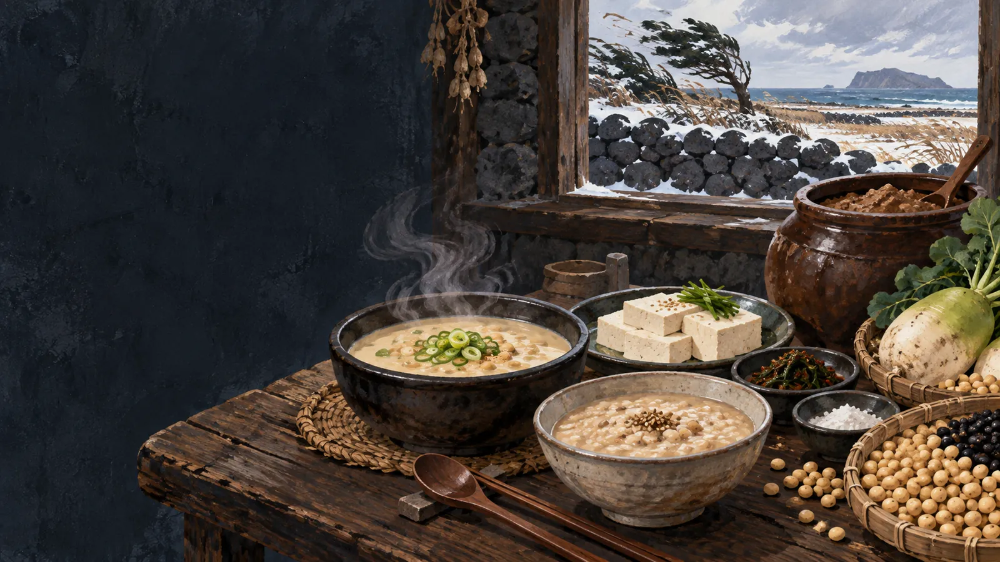

돌 틈의 깅이
조간대의 작은 게를 생활어로 묶어 부릅니다.
 제주에서는 이 재료를
제주에서는 이 재료를
깅이죽의 생활문화를 바탕으로 제작한 기록화 · 생성 이미지
‘깅이’는 제주어로 게를 가리키며, 음식 이름에서는 바닷가 돌 틈에서 잡은 작은 게 무리를 폭넓게 이르는 경우가 많습니다. 하나의 생물종으로 고정하기보다 마을과 화자가 어떤 게를 뜻했는지 함께 기록해야 합니다.
작은 게를 깨끗이 손질해 껍데기째 찧거나 갈면 살과 내장의 맛이 우러납니다. 물을 섞어 체에 여러 번 거른 국물에 불린 쌀을 넣고 끓이면 껍데기의 거친 조각은 덜고 진한 고소함은 남습니다.
많은 양의 살을 발라내기 어려운 작은 게를 통째로 활용하되, 먹기 힘든 껍데기는 체로 걸러내는 생활의 기술입니다.
물이 빠진 돌 틈과 웅덩이에서 필요한 만큼 잡습니다.
모래와 이물질을 여러 번 씻고 상한 개체를 골라냅니다.
절구나 도구로 껍데기째 잘게 부숩니다.
물을 섞어 체에 걸러 진한 국물만 받습니다.
불린 쌀과 함께 저어 가며 고소하게 끓입니다.
게 껍데기까지 부수는 것은 적은 살과 내장의 맛을 최대한 우려내기 위해서입니다. 체에 거르는 단계는 딱딱한 조각과 모래를 제거해 부드러운 죽의 질감을 만드는 핵심입니다.
조간대의 작은 게를 생활어로 묶어 부릅니다.
부수고 거르는 두 도구가 맛과 안전한 질감을 만듭니다.
게의 진한 향과 쌀의 부드러움이 만납니다.
깅이·겡이 등 화자의 발음과 지역
모든 표현이 같은 종이라는 해석
잡은 장소·계절·게의 생김새
시장명만으로 생물종 확정
볶은 뒤 찧는지, 바로 가는지, 체의 횟수
한 가지 조리법만 전통으로 규정
제주 해안의 생물은 누구나 마음대로 채취할 수 있는 자원이 아닙니다. 마을어장과 어업권, 보호구역, 채취 금지 기간·크기 규정이 장소와 종에 따라 다르므로 현장 표지와 어촌계 안내를 먼저 확인해야 합니다.
누가, 어느 물때에, 어떤 도구로 깅이를 잡았는지까지 물으면 깅이죽은 단순한 레시피에서 해안마을의 노동과 기억을 보여주는 기록이 됩니다.
공공기관·연구기관의 원문을 우선했습니다. 링크와 문서 내용은 2026년 9월 확인했습니다.